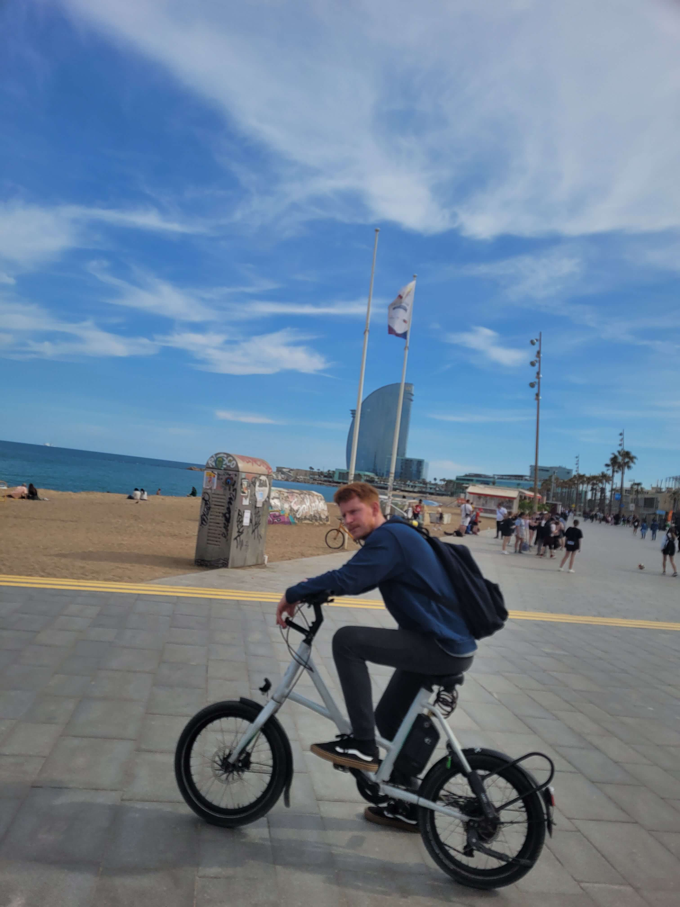

Hello everybody and welcome to my Portfolio!
My name is Josh Turner and this year I decided to improve my life dramatically.
(Hope you enjoy the pictures and there is also a funny little video of me hidden somewhere).
Have you ever just been sat at your desk at work, in a warm office after a long day of doing the same thing you did the previous 4 days and learnt nothing new? One day I thought to myself "I'm not sure I want to do this for another 30years until I retire". If your answer is yes then I believe you will find this portfolio very relatable and hopefully inspire you to make a change too.
A very good friend

of mine who trained himself to be a Senior Devops Engineer in just 5 years and now is able to work remotely from anywhere in the world while earning a very respectable salary
and not only that, he thoroughly enjoys his work and is happy
 .
.
I realised coding would be perfect for me for 2 main reasons:
- The first reason and most important reason for me is, there is always something new to learn, coding is literally endless learning and learning something new everyday makes me enjoy my work. You know what they say "if you enjoy your work, are you really working?".
- The second reason is flexibility. As most roles are hybrid or purely remote working, there is the option to travel abit, obviously not too far from the country you work in. This allows a change of scenery and new adventures for outside of work, which gives me a chance to see more of the world and clench my need for adventure and meeting new people.
This section is just all about me, from special moments in my life I'm happy to share.
So it all began back in May 1989 when I was born in Milton Keynes but bred in Gozo I've sadly been told "shivers". We did actually move to Gozo when I think I was about 2 or 3 years old, but I luckily have lot's of memories of living there. One of which was that I went to a school which was run by nuns and funnily enough when I came back to Stony Stratford about 3 years later and started in year 1. I had the best spelling, handwriting and grammar, so fair play to those nuns.
I believe due to being an only child I have always found it easy to make friends anywhere I go, well technically I do have a half sister but she is older and we never lived together, as my parents had me rather late.
I'm one of the lucky people who actaully enjoyed school especially the later years, so many stories to remember. I got my first job at 14 while still at school as a kitchen porter at The Old George in Stony Stratford. I worked every Sunday and earned £4 an hour for 6 hours in a very hot and small kicthen, where the Sunday roast spit would be in full rotation and the dish washer was permanently broken as far as I could tell.
At one point in my life in my early 20s, I was a Personal Trainer and a Snowboard Instructor , which were both incredibly fun and rewarding jobs just not finacially Ha! but I did meet the best people. Being a snowboard instructor opened up the doors to one of the best holidays of my life, when I went on a BUSC event with the Scottish universities to the French Alps. This was by far one of the greatest trips I have ever been on, partying in the beautiful mountains with thousands of students was incredible and the snowboarding was good fun too.
I've always had a great bunch of friends and we've done alot of travelling together, from camping to staying at luxury villas in Barcelona. We regulary go out for meals and luckily a few who are into golf which I adore playing but sadly do not play enough. One thing we all have in common is our love for gaming online, mainly for the social side believe it or not.
One of my proudest moments being the best man for the person I have known the longest in my life and was my first friend when I retuned to England
Mental health, fitness and wellbeing. I truly believe you have to experience the lowest lows before you can feel the highest highs
When I was about 27 my mother was diagnosed with cancer for the second time in just over 20 years. However this time I was alot older and it really hit me. Thankfully and touch wood my mum beat cancer and now is happily retired with my father in a lovely little town near Peterborough. However I couldn't stop thinking about the next threat that was coming for me and my family even after my mum got the all clear. The best way to describe it was my brain was stuck in a hyperesponse mode constantly on the lookout for the next threats, either diseases or accidents coming for my family.
Through a contact from my mother I went to see a self taught therapist who changed everything just by listening to me. She told me I wasn't broken and what I was going through was normal, which alone was music to my ears. Something so simple making the biggest difference. I then started a journey constantly improving my mental health. I am now stronger than ever and very proud.
Now I keep myself in check by eating well, luckily myself and one of my best mates who I live with both love our food and he is a very good cook, excercising regulary, socialising and keeping the people I love the most, happy. Also the Wim Hof breathing technique and cold water exposure is incredible! Don't knock it until you try it. For this reason I've always wanted to have my own fitness and wellbeing app. Having battled through anxiety myself, I'd like to help others and soon I will be able to create a free app in my spare time and achieve this goal myself.
I listen to alot of music now too and at this point today the following are my current top 5:
The Journey so far.
Back in december 2022, I had just booked a doctor on a truly incredible position. But despite all my efforts it was not meant to be, which feels like you just wasted a week of hard work.
That was the moment that changed my mindset completely and I didnt look back. Even though I loved my colleagues
 and didnt want to leave them,
recruitment is one of those jobs that the better you get at your job, your job actually becomes tougher and more stressfull as you have many clients to look after.
But how could I get similar if not better pay and a much better working life balance....
and didnt want to leave them,
recruitment is one of those jobs that the better you get at your job, your job actually becomes tougher and more stressfull as you have many clients to look after.
But how could I get similar if not better pay and a much better working life balance....
I wanted a life like my friend did in Barcelona, so I started to look into coding as soon as I got home that night. I quickly found that Front-End allowed me to be creative and watch my work come to life. Plus like I said earlier, I love to learn and everyone I had spoken to so far said that coding is a never ending lesson, so I was sold. "The powers of the universe" must of been aware of my new choice as an amazing deal suddenly appeared on my instagram for 50% off the Codecademy pro course!! Can you believe the luck Ha! Luckily Codecademy was the provider my friend used as well, they had nothing but good reviews and positive videos on youtube.
So I dived straight in and by the end of February I handed in my notice and started the course. I'm very thankfull that I got on well with my directors who were nothing but supportive, I even still play golf with them now.
As soon as I started the course I was hooked. The time for the course was estimated for 8-12 months but as I wasn't working, I gave it everything I had and passed all the exams and projects within 5 months. I really enjoyed the course and how well laid out it was and once I started to see the work come to life on my screen, I knew I made the right choice. To see a number of the projects completed with Codecademy, please feel free to click on the GitHub link below (next to the email icon).
However I am now at the toughest stage of the course which is finding that first role with no on the job experience, it is a little scary. But nothing will stop me from making this work, which is why I have created this portfolio to hopefully show my skills and personailty.
Want to know about my previous experience?
Front End Engineer
03/2023 - present
Since starting my course in March I have covered HTML, CSS, Javascript, React and Redux. I am also very familiar now with Git, Node.js and understand Build Tools, Data Structures and Algorithms. I have even done an introductory course on PHP as I was curious in the similarities to HTML. Upon completing the PHP course I realised that Javascript and React is where I want to invest my time the most.
I have created this portfolio using HTML, CSS and Javascript. The HTML is handling all the text and links for pictures and icons. The CSS has created all the colours, styles, size of text and pictures. Javascript is moving between each section without reloading the page, creating the hamburger icon for smaller device screen sizes and ensures the navigation bar at the top scrolls down with the page.
I have createrd a number of projects with Codecademy which you can find on my GitHub profile by clicking the link at the bottom of the page. I will be uploading personal projects very soon in a brand new section of my portfolio!
Copyright © 2023 Joshua Hedges-Turner. All rights reserved.
Specialist Recruiter in Mental Health Services
Unite Medical 01/2019 - 03/2023
Spearheaded recruitment efforts for a diverse range of mental health professionals, collaborating closely with healthcare institutions and organizations to tailor recruitment strategies and address specific staffing needs.
I thouroughly enjoyed my time with Unite Medical and I was sad to leave, mainly due to my colleagues and clients that I had a built a strong bond with. I used to hear the most facsinating stories from doctors and some would come to see us in the office and give us gifts on special occasions. I also got to experience alot of travelling to conventions and meeting many proffesionals and the staff parties were great fun and creative.
Financial Managment
Cabbot Financial & 118118Money 03/2017 - 11/2018I worked in finacial managment for two different companies. Started at Cabbot and then moved to 118 118 Money when I was made redundent as the site closed. At Cabbot I was Responsible for handling a large volume of accounts within a large team who contact customers on a daily basis to help manage their financial situations whilst adhering to all aspects of compliance at all times.
With 118118 Money I was part of the first recruitment drive to get 118118Money up and running in their Milton Keynes branch. Helped to deliver a best in class arrears management function. Brought in fresh ideas and processes to help maximize profits while keeping the customers interest at heart. I was also made redundent from this job too, again due to site closure.
Gas Technician
Eaton Electrical 06/2016 - 03/2017This postion was recommended to me by another very good friend of mine and I was rather lucky to even be considered as my previous role was snowboard instructor. Luckily the hiring manager was looking for someone with little experience as a gas technician and a fresh pair of eyes to help bring in some fresh ideas.
A member of a 10-strong specialised team responsible for the fabrication of components and the assembly of industrial gas analysers, minaly a product called the GIR 6000. In the beginning I had to take many safety courses especially as I was going to be mixing very dangerous gasses to measure there oxygen content. Eventually I was tasked with teaching very experienced engineers how to mix and measure gasses in a lab , which at first they really didnt appreicate but I quickly earned their respect. I have to say though it was very cold in the winter.
Operations Support manager/Snowboard Instructor
Snozone Milton Keynes 10/2013 - 06/2016,
I started at Snozone as a rental technician, while still working as a personal trainer. I see a pattern emerging here as a I got this position through a close friend aswell, who was the manger of the rental department. Luckily Snozone working hours are all over the place anyway so fitting in shifts around my clients pt sessions was not a problem. Within the 3 years at Snozone I became the Rental Supervisor then trained to be a Snowboard Instructor but then an oportunity came up for Operations Support Manager so I thought why not and I got the position.
In my probation period for the operations role (6 months due to lack of operations manager experienced was agreed at the start) I managed to increase sales by 110% on merchandise compared to the previous year, also I helped to set up and test the new camera system on park nights to capture customers doing tricks. I was blessed to even help the director change the branding image around the site. I did however decide that managanment at Snozone was not for me, so decided to carry on instructing as that was where my passion lay. I quickly became a reliable and the go too instructor for any extra shifts especially for private lessons and kids camp and received alot of positive feedback.
Amusing video of me messing up a jump while opening the slope at 7am. I also thouroughly enjoyed park shaping and was happy to do late shifts and help out the CAT driver put the park in place.
Josh Turner Fitness
12/2012 - 12/2014
Independent Milton Keynes based Personal Trainer . I setup, managed and financed this small business on the side. I was initially supported by the Princes Trust for one year before I continued to keep it developing for another year.
Proud moments
Prepared a 24-page business plan which I presented to the board of The Princes Trust and gained their support. Learned and developed my knowledge on how to run a business effectively, sticking to predicted forecasts. Created a small cliental of repeat customers.